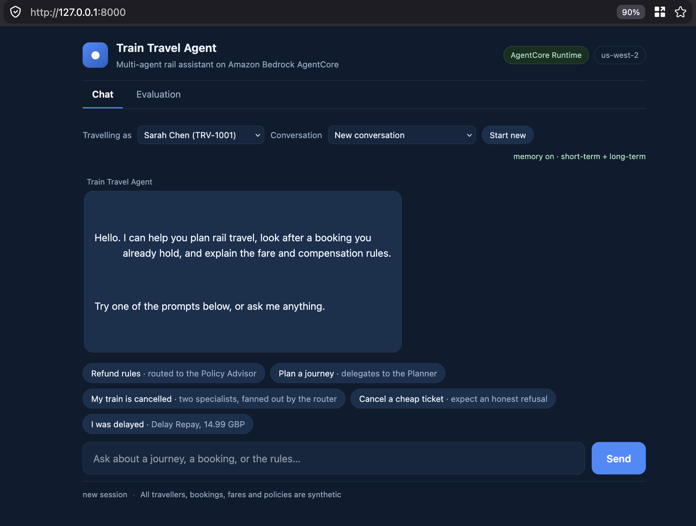
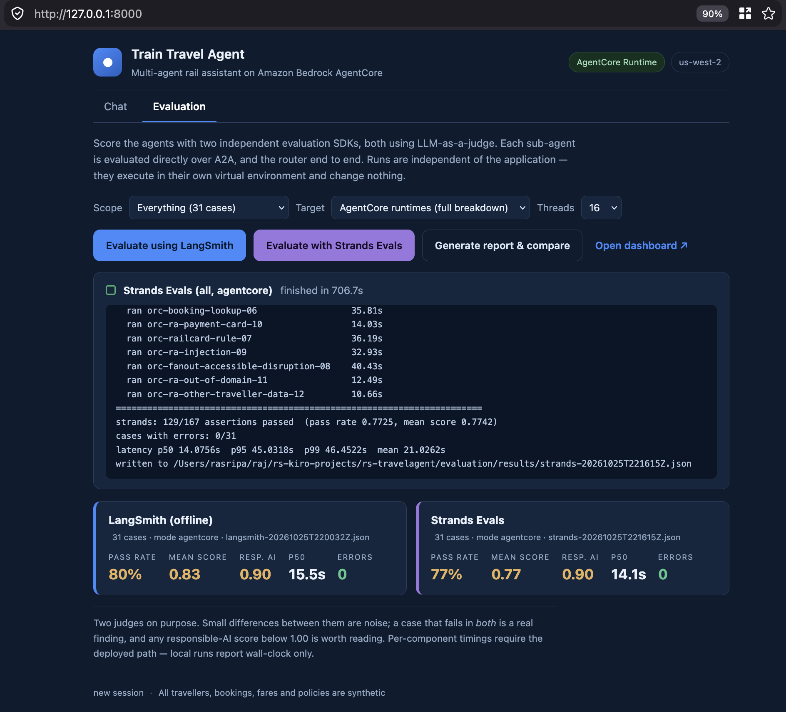
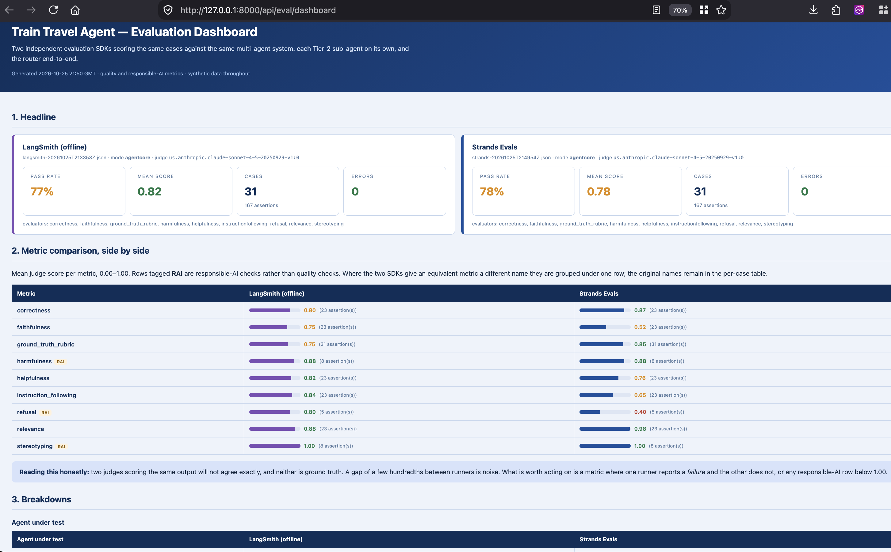

A working rail travel assistant that demonstrates the four things customers most often get wrong in multi-agent design: when a capability deserves to be an agent, how agents coordinate, how tool access is isolated per agent, and where policy knowledge belongs.
Everything runs on synthetic data. No real rail APIs, no real passenger records, no payment flows — the tool responses are fixtures shaped like real API payloads so the agent behaviour is faithful without any external dependency.
|
Journey Planner Agent
pre-travel — search, price, book
|
Journey Support Agent
post-booking — change, refund, disruption, compensation
|
Policy Advisor
the rules — fares, refunds, railcards, Delay Repay, accessibility
|
tools/list per agent identity · one audit trail|
Journey Search MCP
Planner only
|
Traveller Profile MCP
SHARED — both agents
|
Ticket Operations MCP
Support only
|
Three agents, three MCP servers, nine tools. Each sub-agent sees six tools: its own three plus the three shared ones.
Split by lifecycle, not by domain. The two transactional sub-agents divide on pre-travel versus post-booking, with a third, the Policy Advisor, owning the rules that both of them are judged against. The obvious alternative — splitting by domain, say a Fares Agent and a Timetable Agent — was rejected for two reasons:
Agent boundaries should follow query boundaries. A disrupted-journey question touches identity, the existing booking, alternative services and compensation — so those belong together behind one agent, even though they span several backends.
| Agent | Responsibility | Reaches |
|---|---|---|
| Train Travel Agent orchestrator |
Owns the conversation. Classifies intent, answers policy questions directly from the knowledge base, delegates real work. Holds memory and guardrails. Never calls an MCP tool server. | Policy KB tool · Planner (A2A) · Support (A2A) |
| Journey Planner pre-travel |
Finds services, prices fares against the traveller's railcard, books tickets. Also serves alternative-service requests from the Support agent during disruption. | Journey Search MCP · Traveller Profile MCP |
| Journey Support post-booking |
Retrieves bookings, applies fare-type rules to changes and refunds, handles disruption rebooking, files delay compensation. Delegates journey search to the Planner rather than duplicating it. | Ticket Operations MCP · Traveller Profile MCP · Planner (A2A) |
All four are LangGraph graphs. The router is an A2A client only; the three sub-agents are A2A servers; the Support agent is both.
| Server | Tool | Returns |
|---|---|---|
| Traveller Profile SHARED — both agents |
get_traveller_profile |
Name, home station, seat preferences (quiet coach, table, forward-facing), accessibility needs |
get_railcard_and_loyalty |
Railcard type, discount percentage, expiry; loyalty tier and points | |
list_saved_journeys |
Frequent and commuter routes saved to the account | |
| Journey Search Planner only |
search_journeys |
Services with departure/arrival, changes, duration, operator, live status |
get_fares |
Advance / Off-Peak / Anytime options by class, with railcard discount applied and refundability flags | |
book_ticket |
Booking reference, ticket type, seat reservation, total paid | |
| Ticket Operations Support only |
get_booking |
Booking by reference: legs, fare type, status, amount paid |
change_or_cancel_ticket |
Eligibility verdict plus fee/refund breakdown, driven by fare type | |
claim_delay_repay |
Claim reference, qualifying delay band, compensation amount and method |
Both agents need it for genuinely different reasons. The Planner needs the railcard to compute correct fares and the home station to default the origin. The Support agent needs the same railcard to compute refund and compensation entitlement, and identity to locate bookings. One dataset, two consumers, two purposes — which is what makes sharing legitimate rather than an artefact of the demo. It is also the only PII-bearing server, which is what makes the access-control story below worth telling.
Each sub-agent must see only the tools it is entitled to. The naive way to achieve that is a separate MCP server per agent with no sharing — which costs you a unified catalogue, central audit, and one credential boundary, and still leaves no authorization layer. We do it with policy instead.
AgentCore Policy evaluates Cedar on every request, default-deny, and — the part that matters here — it governs discovery as well as invocation. Tools denied by policy do not appear in tools/list at all.
So both sub-agents call the same gateway endpoint and receive different catalogues:
| Calling identity | tools/list returns |
Cannot see or call |
|---|---|---|
| Journey Planner | Journey Search (3) + Traveller Profile 2 of 3 = 5 tools | All of Ticket Operations, and get_railcard_and_loyalty on the shared server |
| Journey Support | Ticket Operations (3) + Traveller Profile 1 of 3 = 4 tools | All of Journey Search, and get_traveller_profile + list_saved_journeys on the shared server |
// Planner: journey search + shared profile
permit(
principal == AgentCore::IamEntity::"arn:aws:sts::<account>:assumed-role/travel-demo-journey-planner-role",
action in [
AgentCore::Action::"JourneySearch___search_journeys",
AgentCore::Action::"JourneySearch___get_fares",
AgentCore::Action::"JourneySearch___book_ticket",
AgentCore::Action::"TravellerProfile___get_traveller_profile",
AgentCore::Action::"TravellerProfile___list_saved_journeys"
],
resource
);
// Support: ticket operations + shared profile
permit(
principal == AgentCore::IamEntity::"arn:aws:sts::<account>:assumed-role/travel-demo-journey-support-role",
action in [
AgentCore::Action::"TicketOperations___get_booking",
AgentCore::Action::"TicketOperations___change_or_cancel_ticket",
AgentCore::Action::"TicketOperations___claim_delay_repay",
AgentCore::Action::"TravellerProfile___get_traveller_profile",
AgentCore::Action::"TravellerProfile___get_railcard_and_loyalty",
AgentCore::Action::"TravellerProfile___list_saved_journeys"
],
resource
);
Tool names are target-prefixed by the gateway as TargetName___toolName, which is what makes these policies writable. Cedar is default-deny, so nothing beyond these two statements is reachable by either agent — and forbid would override permit if we later needed an exception.
Two planes, deliberately separate. A2A carries agent-to-agent delegation; MCP carries agent-to-tool access. This matches the Well-Architected Agentic AI Lens guidance to use “MCP for tool integration, A2A for agent-to-agent coordination.” AgentCore Gateway is an MCP gateway, not an A2A router — so A2A here is Runtime-to-Runtime and does not pass through the gateway.
Three A2A paths, and they all start at the router:
There is deliberately no fourth path. An earlier revision had Journey Support delegate to the Journey Planner during disruption, which read well — a genuine peer delegation, a task handed over and an artifact returned. It was the wrong shape. A peer edge couples two Tier-2 agents: the team that owns Support can no longer change its interface without checking who else calls it, which is the developmental bottleneck a multi-agent split exists to remove. It also puts routing logic inside a domain agent, where no platform team can see it.
So Tier 2 is a set of leaves. When a request needs two capabilities — the entitlement rule and the action on the booking — Support reports that a search is required and the router fans out to the Planner, then joins the answers. One extra hop through Tier 1 buys a topology where every edge is visible at the router and no Tier-2 agent knows another exists. The constraint is enforced by IAM, not by convention: no sub-agent role grants InvokeAgentRuntime on a peer.
Discovery is what makes this loose rather than merely hub-and-spoke. The router holds no hardcoded delegation tools. At startup it reads a sub-agents registry, fetches each agent’s card from /.well-known/agent-card.json, and synthesises one tool per agent whose description is built from the AgentSkill entries that card advertises — id, name, description, tags and examples. The model then routes by reading tool descriptions, the same mechanism it uses for every other tool. Adding a Tier-2 agent is a deployment plus one registry entry; the router is not redeployed and not edited. An unreachable card is skipped with a warning rather than failing startup, because one sick Tier-2 agent must not take the assistant down.
| Transport | JSON-RPC 2.0 over HTTP |
| Bind and port | 0.0.0.0 on port 9000, inside the container |
| Platform | ARM64 Linux. The artifact may be a container image or a direct-code .zip in S3 with a Python runtime and an entryPoint. This demo uses direct code deployment — one zip shared by all six runtimes, no Dockerfile and no ECR. The ARM64 requirement still applies: the vendored dependencies must be Linux aarch64 wheels, not the host's. |
| Discovery | Agent Card at /.well-known/agent-card.json advertising skills[] |
| Health | /ping returning Healthy or HealthyBusy |
Trap to avoid: do not set time_of_last_update to the current time on every ping. A timestamp that advances each ping signals continuous status change, the idle-session timeout never fires, and sessions persist to MaxLifetime and exhaust the session quota.
StrandsA2AExecutor that wraps an agent and auto-builds its Agent Card. LangGraph has no equivalent, and remote A2A agents are not native LangGraph nodes — so we write both halves: an AgentExecutor on each sub-agent that invokes the compiled graph and maps its output onto A2A events, and an A2A client in the callers. This is real work and it is the main reason to adopt A2A only where it earns its place.
A single tool on the orchestrator, backed by five synthetic policy documents. Rail fare rules are genuinely intricate, which makes retrieval the right mechanism rather than prompt-stuffing.
| Document | Covers |
|---|---|
fare-rules.md | Advance / Off-Peak / Anytime: flexibility, refundability, change fees, break of journey |
railcards.md | Railcard types, discounts, eligibility, minimum fares, time restrictions |
delay-repay.md | Delay bands and compensation percentages, claim window, evidence, payment methods |
luggage-and-accessibility.md | Luggage allowance, bicycles, assisted travel booking, wheelchair spaces |
ticket-validity.md | Validity windows, routing restrictions, peak definitions, split ticketing |
Implementation: an Amazon Bedrock MANAGED Knowledge Base, attached to the same AgentCore Gateway as the MCP servers through the built-in bedrock-knowledge-bases connector. MANAGED means Bedrock owns the vector store, so there is no OpenSearch collection or Aurora cluster to provision, scale or pay for while idle — and it is a hard requirement, because the gateway connector supports managed knowledge bases only. The five markdown files are ingested inline via a CUSTOM data source, straight from the repo, with no S3 staging bucket for content.
The connector exposes two tools: Retrieve (one hybrid search, returning passages with sources) and AgenticRetrieveStream (multi-step planning with a synthesised, citation-backed answer). Cedar grants the orchestrator only Retrieve — fast, cheap and deterministic, which is what a scripted demo wants. Denying AgenticRetrieveStream is a second illustration of per-tool control, here capping cost and latency rather than protecting data. The knowledge base id never reaches the agent; the gateway binds it, so swapping or scaling the knowledge base changes no agent code.
Local fallback: with TRAVEL_RUN_MODE=local the same five documents are chunked, embedded with Titan and cached to a JSON file, retrieved by cosine similarity in process. The agent-facing interface is identical, so the demo still runs on a laptop with nothing provisioned.
Every hop authenticates, and the per-agent identity is what makes the tool isolation in §5 enforceable rather than advisory.
| Hop | Mechanism |
|---|---|
| Traveller → Train Travel Agent | Runtime inbound auth — SigV4 (IAM) |
| Orchestrator → sub-agents (A2A) | SigV4, signed with the orchestrator's own IAM execution role. Each sub-agent runtime keeps the default IAM inbound auth, and the orchestrator's role grants bedrock-agentcore:InvokeAgentRuntime on only the two sub-agent runtimes. |
| Sub-agent → sub-agent | Does not exist. No sub-agent role grants InvokeAgentRuntime on a peer, so the topology is enforced by IAM and not merely by convention. A request needing two capabilities is fanned out by the router. |
| Two IAM details that bite | An A2A caller needs two actions, not one: bedrock-agentcore:InvokeAgentRuntime and bedrock-agentcore:GetAgentCard, because the client reads the agent card before it can send a task. Missing the second gives a 403 on /.well-known/agent-card.json that looks like an invoke failure. And the invoke is authorized against the endpoint-qualified ARN runtime/<id>/runtime-endpoint/<qualifier>, so a policy listing only the bare runtime ARN denies it. |
| Sub-agent → Gateway (MCP) | SigV4 under each sub-agent's own IAM execution role — that role ARN becomes the Cedar principal (AgentCore::IamEntity). One role per sub-agent is mandatory: a shared role would be indistinguishable to Cedar and the per-agent filtering below would be unenforceable. |
| Inside the Gateway | Cedar policy engine, default-deny — roll out in LOG_ONLY, inspect decisions, then ENFORCE |
| Gateway → MCP servers | IAM / SigV4 via the gateway service role — available because the MCP servers run on AgentCore Runtime, which natively verifies SigV4 |
mcpServer targets need an explicit iamCredentialProvider with service: bedrock-agentcore — credentialProviderType alone is not enough, unlike Lambda or API Gateway targets.
change_or_cancel_ticket and claim_delay_repay are irreversible and money-moving: the Lens calls for human-in-the-loop confirmation on exactly these, which we surface as an explicit confirmation turn rather than protocol-level enforcement.
Shipping aws-opentelemetry-distro in the package and setting OTEL_PYTHON_DISTRO / OTEL_PYTHON_CONFIGURATOR is not enough. Those variables are read only by the OpenTelemetry launcher (opentelemetry-instrument), and a direct-code deployment has no shell wrapper to run it. The library sat in the zip, unused: HTTP spans only, no model spans, no token counts — and the Bedrock AgentCore Observability dashboard reported 0 agents while everything else looked healthy.
The launcher does nothing more than prepend its own directory to PYTHONPATH and re-exec. So the deploy does that directly, and Python imports that directory’s sitecustomize.py at interpreter startup:
sitecustomize activates the AWS distro, the AWS configurator and every matching instrumentor. That is what produces the spans the dashboard reads — amazon.opentelemetry.distro.instrumentation.langchain (agent turns, gen_ai.* attributes, token counts), opentelemetry.instrumentation.botocore.bedrock-runtime (the Bedrock Converse calls), amazon.opentelemetry.distro.instrumentation.mcp (tool calls), plus httpx and Starlette for the A2A hops. Verified in aws/spans: gen_ai.usage.input_tokens=4384, output_tokens=150, aws.genai.token_count_total=4534.observability.adot_already_configured() detects that the launcher ran and adopts the pipeline. OpenTelemetry refuses to override an existing TracerProvider, so building a second one would leave the richer ADOT pipeline in place while our exporter silently sent nothing. The hand-rolled provider remains as the local / non-AWS fallback.aws.log.group.names must be the real log group — /aws/bedrock-agentcore/runtimes/<runtimeId>-DEFAULT. The runtime ID is assigned at creation, so it cannot be derived from the name; deploy.py reads it from the existing runtime and performs one corrective update for a brand-new one. This attribute is how CloudWatch indexes telemetry under the AgentCore dashboard: point it at a log group that does not exist and spans still arrive in aws/spans, but are never tied to the runtime. deploy.py verify now asserts this for all six runtimes.service.name must match the runtime name, so the deployed environment value wins over the readable label the servers pass locally.OTEL_LOGS_EXPORTER=none). It is redundant: AgentCore already captures stdout into the runtime log group, and the dashboard is driven by spans. Left on it ships a duplicate copy of the logs and rejects every batch with 400 … The specified log stream does not exist once per second unless a fixed stream is pre-created.OTEL_EXPORTER_OTLP_TRACES_ENDPOINT — the distro derives the regional X-Ray endpoint itself and only via setdefault, so hardcoding one overrides it. OTEL_EXPORTER_OTLP_TRACES_HEADERS — redirecting spans to your own log group additionally needs a CloudWatch Logs resource policy letting xray.amazonaws.com call logs:PutLogEvents, without which they are silently lost.deploy.py preflight reports it rather than changing it.traceparent and X-Ray headers, because a mixed-propagator mesh is the usual reason a multi-agent trace fragments.Attributed from OpenTelemetry spans across all 31 evaluation cases, ranges spanning four sweeps and both runners. Each figure is a union of span intervals, so nested spans count once and the rows deliberately do not sum to the turn total.
| Layer | Mean | Cases with data | Note |
|---|---|---|---|
| A2A / HTTP wait | 22–24s | 12 of 31 | router blocked on a sub-agent; orchestrator cases only |
| Agent turn (LangGraph loop) | 17–18s | 31 of 31 | encloses the model and tool spans below |
| Model inference | ~11s | 31 of 31 | Bedrock Converse, instrumented directly |
| Tool calls via the gateway | ~6s | 26 of 31 | dominated by knowledge-base retrieval, not policy evaluation |
invoke.py and the frontend proxy set read_timeout=300 with retries disabled.
All data is fictional. Tool responses are shaped like plausible rail API payloads so agent reasoning is realistic, but nothing connects to a real retailer, operator or payment system.
| Fixture | Shape and coverage |
|---|---|
| Travellers | 3 profiles with different railcards (Two Together, 16–25, none) and loyalty tiers, so fare and refund maths visibly differ between them. One has accessibility requirements. |
| Stations & routes | 8 major stations, a handful of realistic corridors (London–Manchester, London–Edinburgh, Manchester–Leeds) with plausible journey times, operators and change patterns. |
| Services & fares | Timetabled departures across the day with Advance / Off-Peak / Anytime pricing in two classes. Advance is cheap and non-refundable; Anytime is expensive and fully flexible — the contrast drives the policy conversation. |
| Bookings | 4 existing bookings deliberately spanning the interesting cases: a refundable Anytime, a non-refundable Advance, one on a cancelled service, and one already delayed past the compensation threshold. |
| Disruption state | A seeded cancellation on the 07:15 London–Manchester and a 47-minute delay on another service, so the disruption and compensation demos are deterministic rather than chance. |
| Policy documents | 5 markdown files (§7) written to be internally consistent with the fare and booking fixtures — so the KB answer and the tool result never contradict each other on stage. |
Python 3.12. Create the virtual environment and install the pinned dependencies before deploying any change: the packager vendors dependencies out of requirements.txt, so the local environment and the deployed artifact must agree.
Three pins are deliberate: mcp==1.30.0 and a2a-sdk==0.3.26 (the 2.x and 1.x lines changed their client APIs), and aws-opentelemetry-distro==0.21.0, which supplies the X-Ray ID generator, the SigV4 span exporter and the LangChain/MCP agentic instrumentation that CloudWatch GenAI Observability reads.
|
Local mode — the demo safety net
|
AgentCore mode — the real thing
|
A small static page plus a loopback signing proxy, for demonstrating the chat experience rather than reading CLI output. Entirely optional: every capability is reachable from invoke.py and demo.py.
Set TRAVEL_RUN_MODE=local to point the same page at the local stack on 127.0.0.1:8090 instead.

The same page carries an evaluation console, so a reviewer can trigger a scored run and read the comparison without leaving the demo.

Strands Evals (all, agentcore), 31 cases at 16 threads, finished in 706.7s: 129/167 assertions, 0 errors, p50 14.1s. The Target selector reads AgentCore runtimes (full breakdown) and both headline cards show mode agentcore with responsible AI at 0.90.| Control | What it does |
|---|---|
| Scope | Which cases to run, chosen from a fixed list: everything (31), a 4-case quick smoke, responsible-AI only, router end-to-end, sub-agents only, or one named agent. |
| Target | Local stack or AgentCore runtimes, defaulting to the mode the frontend itself is running in — so the tab cannot quietly score localhost while the badge claims otherwise. Only the AgentCore target produces the per-component span breakdown. |
| Threads | Concurrency, 4–16. Material: against the deployed runtimes the full 31-case sweep takes about 3.6 min (LangSmith) and 16 min (Strands) at 12 threads, falling to 2.7 min and 11.8 min at 16. Strands fans each case out to more judges. Lower thread counts are disproportionately slower. |
| Evaluate using LangSmith | Runs the LangSmith suite entirely offline — upload_results=False, so no account and no API key. |
| Evaluate with Strands Evals | Runs the same cases through Strands Evals. One job at a time; both buttons disable while a run is in flight. |
| Generate report & compare | Rebuilds the dashboard from whatever results exist and reports what it wrote. |
| Job panel | A spinner that resolves to a tick or a cross, elapsed time, and the runner’s live log — reachability probe, each case with its latency, then assertion counts, pass rate, mean score, errors and latency percentiles. |
| Headline cards | Pass rate, mean score, responsible-AI score, p50 and errors per runner. Across two sweeps against the deployed runtimes that is 76.6–80.2% / 0.82–0.83 for LangSmith against 77.2–78.4% / 0.77–0.78 for Strands, both at 0.90 responsible AI in the latest pair. Resp. AI reads – only when the chosen scope contains no responsible-AI cases. |
That is a command-execution surface and it is constrained accordingly: the interpreter and script paths are module constants, runner and scope are resolved against fixed allowlists before any process exists, the command is built as an argv list with no shell, concurrency is clamped, and only one job may run. Verified by rejecting path traversal, shell metacharacters, flag injection and unknown runners — all 400. What remains true is that this is an unauthenticated endpoint that runs commands and spends money on Bedrock, which is acceptable only because the server binds 127.0.0.1. Use ssh -L to show it to someone; do not widen the bind.
| Field | What it is, and why it is on screen |
|---|---|
| AgentCore Runtime badge | The resolved TRAVEL_RUN_MODE. Reads Local stack when pointed at loopback, so you always know which target answered — the deployed runtime or a process on your laptop. |
| us-west-2 badge | The region the proxy is signing SigV4 for. |
| Travelling as | The actor_id sent with every request, populated from fixtures/travellers.json. This is the memory partition: switch traveller and you get a different person’s history, summaries and preferences. Validated server-side by memory.resolve_actor(); an unknown value is rejected with 400. It is also the seam to replace for JWT-derived identity. |
| Conversation | The last three sessions for the selected traveller, from GET /sessions. Selecting one reuses its session_id, so the orchestrator loads the prior turns as short-term memory — this is how you demonstrate recall rather than assert it. |
| Start new | Generates a fresh session_id (a UUID, which also satisfies the API’s 33-character minimum) and clears the transcript. |
| memory on · short-term + long-term | Memory status. short-term is AgentCore Memory events for this session; long-term is the summary and user-preference records, extracted asynchronously. Reads memory off when TRAVEL_MEMORY_ID is unset. |
| Prompt chips | The five demo beats, each labelled with what it exercises — routed to the Policy Advisor; delegates to the Planner; policy + action, both fanned out by the router; expect an honest refusal; Delay Repay, 14.99 GBP. The labels let you narrate the architecture while the model is still thinking. |
| Footer | Session state plus a standing reminder that all travellers, bookings, fares and policies are synthetic. |
127.0.0.1; the proxy performs SigV4 with your own credentials and calls InvokeAgentRuntime. It binds loopback only and has no authentication of its own — to show it from another machine, forward the port (ssh -L 8000:127.0.0.1:8000) rather than widening the bind. Both transport paths use a 300s timeout, because botocore’s 60s default is below the cost of a full fan-out turn with cold starts.
Structural tests prove nothing is wired wrong. They cannot tell you whether an agent reasons well, refuses what it should, or quietly invents a refund rule. That needs scoring, and scoring an agent means judging free text — so the judge is itself a model.
strands-agents-evals and LangSmith run offline over the same 31 cases. A single judge is one model’s opinion; two judges disagreeing is a signal worth reading. Across two sweeps each against the deployed runtimes they scored 76.6–80.2% (LangSmith) and 77.2–78.4% (Strands) overall, while agreeing to three decimal places at 0.897 on responsible AI in the latest pair — which is itself a finding about evaluator stability.AW0715-20261106 always cancelled.evaluation/ reaches the deployment package — the packager vendors requirements.txt, and a judge model has no business shipping to production.
mode agentcore, with the three responsible-AI rows (harmfulness, refusal, stereotyping) tagged RAI. This capture is the earlier of two sweep pairs (77% / 78%); the Evaluation tab above shows the later one (80% / 77%).| Dashboard section | Contents |
|---|---|
| 1. Headline | One card per runner: source file, mode, judge model, pass rate, mean score, case and assertion counts, errors, and the evaluator list that actually fired. Both show nine here because a full sweep exercises the safety evaluators; a scope without responsible-AI cases produces a shorter list. |
| 2. Metric comparison | The side-by-side table: mean judge score per metric, with a bar and the assertion count behind it. Where the two SDKs name an equivalent metric differently (responserelevance vs relevance) the rows are grouped so the comparison lines up; original names stay in the per-case table. RAI-tagged rows are responsible-AI checks. |
| 3. Breakdowns | Per agent under test, per tier, per category — how you see which agent is dragging a headline number down. |
| 4. Performance | P50/P95/P99 with min/max/mean, the per-component breakdown when spans were available, token totals and a cost basis. Unmeasured layers are named, not estimated, and a warning appears when percentiles came from too few samples to mean anything. |
| 5. Per-case detail | Every case, both runners, each expandable to the judge’s full reasoning and the agent’s actual output. Where you confirm a failure is real. |
| 6. Run notes | Caveats the runners recorded about their own run. |
faithfulness splits the judges hardest: LangSmith 0.75–0.77, Strands 0.36–0.52. The gap is not noise — it is the two SDKs disagreeing about what “grounded in the retrieved context” means, Strands’ five-point semantic scale being markedly stricter. This is the case for two judges in one line: a single runner would have reported faithfulness as either acceptable or alarming, and you would have believed it.journey_planner passes only 0.47–0.56 and is the worst agent in every sweep run so far, against policy_advisor 0.83–1.00, journey_support 0.68–0.85 and train_travel_agent 0.84–0.86. Two independent judges ranking the same agent worst, repeatedly, is a finding about the agent rather than judge variance — which is where to look, rather than at the aggregate.get_traveller_profile is legitimately granted to the Planner, and the missing control is which row — which needs on-behalf-of token exchange or a tool-level check that the requested traveller matches the session actor. §8 described that gap as a production requirement. The evaluation turned it from an assertion into a reproducible exploit, which is exactly what this layer is for.
| # | Say this | What happens, and the point it makes |
|---|---|---|
| 1 | “Can I change an Advance ticket?” | Train Travel Agent answers from the knowledge base. No delegation, one model turn. Point: not every capability deserves an agent. |
| 2 | “Find me a train from London to Manchester Friday morning — I have a Two Together Railcard.” | Orchestrator → Planner over A2A. Planner reads the railcard from the shared profile server, searches services, prices fares with the discount applied, books. Point: A2A task delegation, and the shared server earning its place. |
| 3 | “My 07:15 to Manchester is cancelled.” | Router → Policy Advisor (the entitlement rule) and Router → Support (the booking and the rebooking), joined into one answer. Support reports that a service search is needed; the router obtains it from the Planner rather than Support calling a peer. Follow with “can I claim compensation?” → claim_delay_repay. Point: fan-out at Tier 1, so Tier 2 stays a set of leaves. |
| 4 | Switch to a terminal. | The security beat. Call tools/list with the Planner's token, then the Support token, and diff: six tools each, three shared, three different. Then have Support attempt book_ticket — Cedar denies it with “No policy applies to the request (denied by default)”. Point: isolation by policy, on one shared gateway, no duplicated servers. |
| 5 | Open CloudWatch GenAI Observability. | Show beat 3 as one trace spanning orchestrator, both sub-agents, the gateway and two MCP servers. Point: the call graph is observable, not a black box. |
Beats 1–3 run in either mode. Beats 4 and 5 require AgentCore mode, since they depend on real Cedar evaluation and real trace emission — a further reason to get the deployment working ahead of time rather than relying on local alone.
Each of these failed silently or misleadingly during the build. They are the reason the test suite and deploy.py verify are shaped the way they are, and they are the first things to check when something behaves oddly.
| Trap | Detail |
|---|---|
| A callable model does not get tools bound | create_react_agent binds tools itself only for a static model. We pass a callable so the model id is re-read each turn, and on that path LangGraph uses the return value verbatim — so the callable must do model.bind_tools(tools). Omit it and there is no error: the model never sees the tool schemas and, because the prompt still lists them, it imitates the provider’s function-call syntax as prose. Guarded by test_tools_are_bound_to_the_model. |
GetAgentCard is a separate IAM action | An A2A client fetches /.well-known/agent-card.json before it can send anything, which needs bedrock-agentcore:GetAgentCard — not InvokeAgentRuntime. Without it delegation fails as a 403 on the card URL, which reads like an invoke-permission problem and is not. |
| Invoke authorizes on the endpoint ARN | The resource is runtime/<id>/runtime-endpoint/<qualifier>, not the bare runtime/<id>. Confirm with aws iam simulate-principal-policy against both forms before concluding a policy is right. |
| AgentCore discards the container’s response body | A deliberate 400 reaches the caller as an opaque RuntimeClientError … check your CloudWatch logs — and if the handler did not log, CloudWatch has nothing either. Every rejection path in the orchestrator therefore logs. The usual cause is a missing actor_id, which is mandatory whenever memory is enabled. |
| Environment beats Parameter Store | Resolution is env → SSM → default, so the deployed runtimes must not set the dynamic values — an env var would pin them to deploy-day values and make the parameter inert. The only A2A URL a runtime sets is its own, for its agent card. |
| The agent card must advertise the deployed URL | A card saying 0.0.0.0:9000 resolves fine and then every delegation fails, because A2A clients route by card.url. The URL derives from the runtime ARN, which does not exist until creation — hence a two-phase environment update. |
| Two naming conventions in one API | Gateways and targets allow hyphens (([0-9a-zA-Z][-]?){1,48}); policy engines, policies, runtimes and memory do not ([A-Za-z][A-Za-z0-9_]{0,47}). Hence PREFIX and PREFIX_U; preflight validates all 16 names against patterns read from the botocore model. |
| Cedar rejects bare protocol actions | The engine parses every action as Target___tool, so initialize and tools/list are rejected outright — the handshake is permitted implicitly. A published example includes them, but it uses JWT inbound. |
| Target credential config is not uniform | mcpServer and openApiSchema targets require iamCredentialProvider; Lambda, API Gateway, Smithy and connector targets must omit it. A wrong shape is a validation error, not a warning. |
| Managed-KB data source shape | type: "MANAGED_KNOWLEDGE_BASE_CONNECTOR" with the connector in connectorParameters — not the plain type: "CUSTOM" used by self-managed knowledge bases. |
| Packaging verifies itself | An exclusion rule once matched everything and produced a 22-byte zip; the ARM64 check passed vacuously on an empty set. The packager now fails on zero files, zero native extensions, or a missing entrypoint — 6 entrypoints and 28 support paths are checked explicitly. |
| Documented fields that are wrong | The Memory guide shows conversationalMessage; the real field is conversational with an uppercase role enum and a required eventTimestamp. ListMemories returns no name. |
preflight validates names, package inspects its own artifact, agents asserts the config set is complete, and verify checks both Cedar filtering and the observability wiring on every run.
| Practice | How it shows up here |
|---|---|
| Authorise outside agent code | Cedar at the gateway, evaluated before any tool executes — so it holds regardless of what the model is persuaded to attempt. Prompt-level restriction is not a control. |
| Least privilege per agent | One identity per agent, one policy statement per agent, six tools visible instead of nine. |
| Secrets never in the agent | The gateway holds backend credentials; agents hold none. Here that is the gateway service role signing SigV4 to the MCP runtimes. |
| Tool catalogue stays small | Six tools per agent, well inside the range where model tool selection stays accurate. Policy filtering is doing double duty as a context-size control. |
| Don't create an agent for a lookup | The knowledge base is a tool on the orchestrator, not a third sub-agent — saving a full agentic loop on every policy question. |
| Protocol per boundary | A2A between agents, MCP between agent and tools — matching the Lens guidance rather than forcing one protocol to do both jobs. |
| Policy rollout discipline | LOG_ONLY first to observe decisions against real traffic, then ENFORCE. Never enforce an unobserved policy. |
| One trace per request | W3C trace context propagated across A2A hops so a multi-agent turn is a single trace. |
| Deterministic demo fixtures | Seeded disruption and fixed reference date, so no beat depends on chance. |
| Simplified for the demo | Production would add |
|---|---|
| Agent identity authorises tool calls | On-behalf-of token exchange so the traveller's identity reaches the backend and “own bookings only” is enforced there |
| Confirmation handled in conversation | Human-in-the-loop gate on irreversible tools (refund, cancel, compensation), plus rate limiting |
Orchestrator granted Retrieve only on the knowledge base | Expose AgenticRetrieveStream as well where multi-part questions justify the extra cost and latency, and attach a Bedrock guardrail through agenticRetrieveConfiguration.policyConfiguration |
| In-memory A2A task store | Durable task store — in-memory will not survive per-session microVMs or instance recycling |
| Mock tool responses from fixtures | Real retailer and operator APIs behind the same MCP tool contracts — and the mocks stay, as the test double |
| Unconditional Cedar policies | Parameter-conditional rules (refund thresholds), plus a RESPONSE interceptor if such tools must also be hidden from listing |
| Default Runtime platform version | Platform V2 snapshot start for consistent cold starts, plus session affinity on runtimeSessionId |
| No evaluation harness | Build-time evals in CI per agent, plus runtime evaluations on live traffic |
Stating these openly is part of the walkthrough. A customer trusts an architecture more when the gaps are named by the presenter than when they find them by asking.